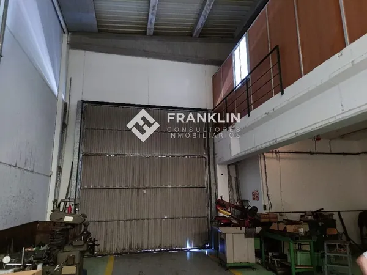
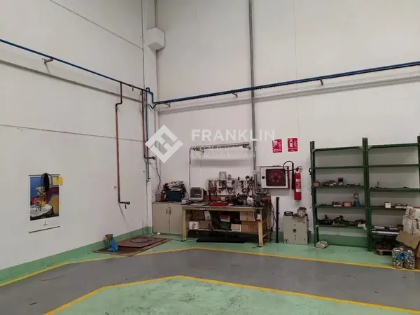
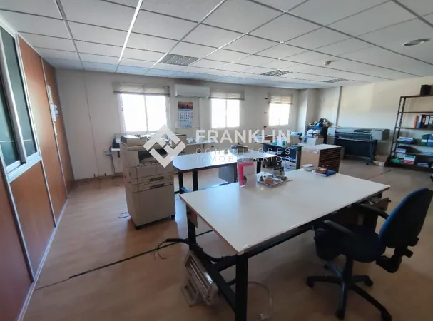

Plano · tocar un número de la lista lo marca acá
Letras: condiciones go/no-go · o: obra necesaria · números: lo que hay que medir o confirmar · c: lo que el chequeo de circulación marca hoy · trazos: el área o la franja de la cota · la línea azul: el largo libre a lo largo de la pista · ejes x/z: el origen de las cotas.
Condiciones go/no-go · si alguna sale mal, la nave se cae o hay que rehacer el layout
- Se decide en la visitaDecide: ≥ 7 m libres bajo jácenas, cerchas, luminarias e instalaciones en la vertical de la plataforma: plataforma a 4,2 m + 2,4 m del rider + 0,4 m de instalaciones (PROGRAMA §1). Si da menos, se baja la plataforma (a lo medido − 2,8 m), nunca el run-out.Altura libre medida con láser sobre la plataforma (m):
7 notas del layout
fuente de la cota: publicada (7 m libres); por perspectiva, folleto p1-2 da ≈7,6-7,8 m hasta la cara inferior de las jácenas con la cámara supuesta a 1,5 m; match3: con las cámaras de hab dca4 y f78f resueltas juntas la cara inferior de la jácena de fachada sale a ≈6,1 m si los pórticos van cada 11 m (lo que se dibuja) y a ≈6,8-7,0 m si van cada ≈13,75 m. Se diseña con los 7 m del anuncio y hay que medir (ver riesgos); o12-edges-2 (ronda de arreglos): joint3.py de match2 con cada ancla de escala sola (la arista de la pilastra del primer pórtico vista en hab dca4, la caja de la escalera contra la medianera x = 14 y la razón jácena/TIR de hab d2b0 para 7 m): con la pilastra en z 11,19 (5 vanos de 11 m) la caja acaba en x 11,97, 2 m antes de la medianera que toca en las dos fotos, y el portón sale de 3,85 × 4,08 m; con 4 vanos de 13,75 m (pilastra en z 13,94) la caja llega a x 14,09, y con los 7 m a 14,11, con la pilastra en z 13,7; las tres juntas con 4 vanos dan 1,76 px RMS (máximo 4,0) y con 5 vanos 2,07 (7,4). Con 4 vanos el portón sale de 4,64 × 4,94 m y el canto del altillo en z 13,6 (8,6 × 13,6 ≈ 117 m²: el anuncio da 115 m² de oficinas; con 5 vanos, ≈ 90). Los 7 m del anuncio calzan con las fotos si los pórticos van cada 13,75 m: la jácena a ≈ 6,3 m era la escala de las cámaras de jobs42 (la lectura A, anclada a la pilastra de z 11,19). Sin cambiar todavía: es una decisión del proyecto (docs/PORTING.md, fila edges-2)
riesgo: Altura: la plataforma queda justo al límite con los 7 m publicados (6,6 m), y no entra si la jácena de fachada está a ≈6,1 m como sale con los pórticos de 11 m que se dibujan (match3): con 6,1 m la plataforma bajaría a ≈3,7 m y la rampa perdería ≈0,5 m de caída. Hay que medir la cara inferior de las jácenas, las campanas y las correas en la vertical de la plataforma (z 53-55).
riesgo: Faltan los trampolines. Con 1,5 m entre marcos (5,2 × 3,05 m), 2 camas lado a lado piden ≥ 7,6 × 5,2 m a doble altura (≈40 m²), más colchonetas. La única franja de doble altura fuera de la pista es la del frente del altillo (x 5,4-14, z 11-18,6 = 8,6 × 7,6 m menos la caja de la escalera, x 11,7-14 × z 11-14,6: ≈57 m²): una pareja de camas entraría sin colchonetas, pero es donde van lounge, café, vending y el paso hacia el retorno. El resto de la doble altura lo ocupan el pad (31 m²), vestuario F y taller (29 m²) y los pasos. Siguiendo la prioridad de PROGRAMA.md (pista > pad > trampolines > gym) se dejan fuera. El gym no compite: va en el altillo, donde una cama no cabe en altura.
riesgo: match3: si los pórticos van cada 11 m (lo dibujado), las cámaras dan la jácena de fachada a ≈6,1 m y la TIR de ≈4,2 × 4,4 m (no 4,5 × 5,0): la plataforma de 4,2 m no entraría bajo las jácenas y la TIR libre quedaría en ≈4,2 m de ancho (pad y paso de entregas más justos). Si van cada ≈13,75 m, el frente del altillo y la caja de la escalera se corren ≈2,4 m hacia la pista, lounge y café pierden ese fondo y taquillas, almacén y extintores de las pilastras cambian de sitio. Hay que medir antes de cerrar la planta.
supuesto: Pórticos cada 11 m (5 vanos), con pilastras de medianera de 0,40 × 0,40 m y ningún pilar en los testeros. Jácena a dos aguas de 0,6 m de canto en los apoyos: alero interior a ≈7,6 m y cumbrera a ≈8,3 m.
supuesto: Plataforma a 4,2 m porque 4,2 + 2,4 = 6,6 = 7,0 − 0,4. Si se miden ≥7,5 m bajo las jácenas, puede subir a 4,7 m.
supuesto: medir en la visita: distancia de la fachada al primer pórtico y altura libre bajo la jácena de fachada. Las cámaras de dca4 y f78f no cierran del todo la escala: con la pilastra de z≈11 donde se ve en dca4 (pórticos cada 11 m, lo que también da hab a357 con f≈670 px) la TIR sale de ≈4,2 × 4,4 m, el forjado a ≈3,6 m y la cara inferior de la jácena de fachada a ≈6,1 m; con la TIR de ≈4,6-4,8 × 4,9-5,0 m y esa jácena a los 7 m del anuncio, el frente del altillo y la primera pilastra quedarían en z≈13,4 (4 vanos de ≈13,75 m) y las oficinas medirían ≈120 m² (el anuncio dice 115). Se mantienen los pórticos de 11 m y el frente en z 11; la caja de la escalera se ubicó respecto del frente, así que se mueve con él.
- Con margenDecide: ≥ 36,4 m en línea recta a lo largo de la pista (plataforma 2 m, rampa, llano y el final más largo, run-out ≥ 8 m), del muro detrás de la plataforma al frente del altillo después del final. Si da menos, se acorta la rampa o el llano y se baja la plataforma, nunca el run-out.Distancia del muro al frente del altillo, a lo largo de la pista (m):
1 nota del layout
supuesto: Tramos de la pista: rampa de 10,4 m (media ≈22°, máxima ≈31°), llano de 14 m, run-out de 10 m en L1-L2 y quarter de 1,2 m en L3 (avanzada, contra la medianera). Son 36,4 m, el largo de referencia de PROGRAMA.md.
- Con margenDecide: Dos salidas o más a la calle o a un espacio exterior seguro, con recorridos de evacuación ≤ 50 m (CTE DB-SI 3 §3, tabla 3.1), y sus puertas con ≥ 0,80 m de paso y 2,10 m bajo el dintel. Cada salida nueva solo vale si el muro da a la calle o a un patio con salida y la propiedad deja abrirla (las obras, en «Obra necesaria»).
- puerta peatonal de 1 m en la arista 0 (hueco 0, x 12,04 · z 0)
- salida de emergencia de 0,9 m en la arista 2 (hueco 2, x 0,64 · z 55)
Salidas confirmadas (cuáles, a dónde dan, ancho de paso):9 notas del layout
riesgo: Segunda salida: la única salida trasera que se ve es el foso que baja a la galería de servicios (hab eedf, folleto p2-3/p2-4). Hay que confirmar que la galería es recorrido de evacuación hasta el exterior y que sirve para pública concurrencia (más de 100 personas).
riesgo: Si no sirve, hace falta abrir una salida nueva, porque el testero y las medianeras son ciegos y una de ellas es el muro cortafuego. Sin ella, desde la plataforma hasta la fachada hay ≈60 m reales (más de 50 m).
riesgo: El pad ocupa 3,6 de los 4,5 m de la TIR: quedan 1,2 m libres de la TIR (x 4,0-5,2) para entregas en transpaleta y como salida. No entra un vehículo y los módulos largos (tubos de 5 m) entran en diagonal o por la puerta peatonal y el vestíbulo recto de 11 m.
riesgo: match: el visor no puede dibujar todavía (shell.js): el foso de la salida trasera como hueco en el suelo con su barandilla negra perimetral (hab eedf, 13f9); el canto blanco de ≈0,7 m del forjado del altillo (lo dibuja de 0,3 m); ventanas en los muros de un altillo (la ventana alta de la cara x− junto a la fachada, hab d2b0); el color de la barandilla de un altillo (sale gris, en las fotos es negra); la caja blanca en la cabeza de cada pilastra (hab eedf, 1d55, 13f9); y el portón de 4 tramos de chapa nervada vertical (lo dibuja con ≈9 paneles horizontales).
riesgo: transitabilidad (rp-a, 24/11): la segunda salida es el foso existente (hueco 2, a −3,0 m: la escalera de 1,3 m baja a la puerta de la galería de servicios). park3d-walk no baja al foso: busca la salida a la cota del suelo, detrás de la barandilla del foso, así que cuenta una sola salida, 70,9 m de evacuación y la salida 2 sin llegar. Son los 3 errores que quedan, y lo que falta es del comprobador (walk-rules: seguir la escalera del foso hasta su puerta); por el foso, desde la plataforma hay ≈30 m y el recorrido se abre en dos al pie de la escalera de la plataforma (≈18 m). No se abre una salida nueva: el testero es ciego y no se sabe qué hay detrás (la nave es adosada y la galería es la salida que dejó la propiedad). Si en la visita la galería no sirve como recorrido de evacuación hasta el exterior para más de 100 personas, la segunda salida es obra (una puerta en el testero, si da a espacio exterior seguro) y pide correr la escalera de la plataforma para dejarle un paso de 1,0 m junto al foso, con las líneas de 3,3 a ≈3,15 m.
supuesto: La plataforma va contra el testero ciego del fondo y la bajada (dir −z) mira a la fachada, para que el final de pista quede frente al lounge y la recepción. El arranque queda junto a la escalera de la plataforma y al foso de salida trasera.
supuesto: La salida de emergencia trasera baja por el foso existente a la galería de servicios, que se supone abierta al exterior. Se marca en el testero a cota −3,0, sin hueco visible en el muro.
supuesto: Demo del visor: usa el primer rail de la lista (L2) con un rider regular que llega por la derecha del rail (lado x+), con el rail del lado de los talones. El rail va desplazado 0,35 m hacia x− para dejar 2,0 m de aproximación y 1,3 m del otro lado para la cola y la salida. El truco es un backside lipslide: ollie, giro backside de 90° con la cola pasando por encima del rail y la punta del lado de llegada, y deslizar mirando pista arriba. rider.js lo hace así desde v2 (ver cotejo «v2: truco»).
supuesto: Muretes de la pista: el visor los dibuja continuos (0,5 m) en los laterales. En el fondo del run-out de L1-L2 deja una salida de 1,2 m del lado de L1 (x 3,5-4,7) que da al paso de 1,6 m entre el taller y el final de pista, y de ahí al retorno.
- Se decide en la visitaDecide: Huella ≥ 0,28 m, contrahuella de 0,13 a 0,185 m y 0,54 ≤ 2C + H ≤ 0,70 (CTE DB-SUA 1 §4.2.1); ancho ≥ 1,20 m (PROGRAMA; el CTE pide 1,00-1,10); tramos de ≤ 2,25 m sin descanso. Una escalera existente que no cumple no sirve para el público (gym o altillo): hay que rehacerla o poner otra.
- de la plataforma (escalera-plataforma): huella 0,28 m, contrahuella 0,17 m, ancho 1,4 m, tramo de 2,1 m sin descanso, sube 4,2 m
- existente (escalera-existente): huella 0,21 m, contrahuella 0,15 m, ancho 0,83 m, tramo de 1,23 m sin descanso, sube 3,7 m
- existente (escalera-foso): huella 0,31 m, contrahuella 0,17 m, ancho 1,26 m, tramo de 3 m sin descanso, sube 3 m
Huella × contrahuella × ancho de la escalera existente (m):20 notas del layout
riesgo: Gym y oficina van en el altillo (+3,7 m) y solo se llega por la escalera existente de la caja blanca: no hay ascensor. Ninguna de las dos es pieza del recorrido accesible obligatorio, pero hay que revisar la sobrecarga del forjado para el gym (rack, discos y suelo de caucho), quitar tabiques de la oficina diáfana y levantar uno nuevo en x≈10,6 entre gym y oficina, que lleva el espejo y la tele.
riesgo: Escalera de oficinas, aseos y vestuario existentes y puerta peatonal están en posiciones supuestas. Si en la visita están en otro sitio, cambia el reparto bajo el altillo.
riesgo: Faltan los trampolines. Con 1,5 m entre marcos (5,2 × 3,05 m), 2 camas lado a lado piden ≥ 7,6 × 5,2 m a doble altura (≈40 m²), más colchonetas. La única franja de doble altura fuera de la pista es la del frente del altillo (x 5,4-14, z 11-18,6 = 8,6 × 7,6 m menos la caja de la escalera, x 11,7-14 × z 11-14,6: ≈57 m²): una pareja de camas entraría sin colchonetas, pero es donde van lounge, café, vending y el paso hacia el retorno. El resto de la doble altura lo ocupan el pad (31 m²), vestuario F y taller (29 m²) y los pasos. Siguiendo la prioridad de PROGRAMA.md (pista > pad > trampolines > gym) se dejan fuera. El gym no compite: va en el altillo, donde una cama no cabe en altura.
riesgo: match2: lounge y café quedan en ≈27 m² (lounge 5,0 × 4,05 y café 3,4 × 2,1, programa 30-50) con la caja de la escalera en x 11,7-14 × z 11-14,6 delante del altillo. El visor pone una barandilla en todo el borde +z del forjado, también entre las oficinas y la caja (x 11,7-14), y no puede cortar la barandilla de un forjado por tramos.
riesgo: match3: la escalera de oficinas es el único acceso al gym y a la oficina de staff (y la «Sortida d'emergència» de las oficinas). Dibujada en U de 3 tramos en la caja de 1,8 × 3,65 m, sale con huella de ≈0,21 m y contrahuella de 0,154: no cumple el CTE para uso general (huella ≥ 0,28) ni el restringido (≥ 0,22), y si la real es así el gym no se puede abrir a clientes. Si no cumple, hay que rehacerla (con el pie fuera de la caja, donde hoy está el cerramiento de madera) o dejar el altillo solo para staff.
riesgo: match3: si los pórticos van cada 11 m (lo dibujado), las cámaras dan la jácena de fachada a ≈6,1 m y la TIR de ≈4,2 × 4,4 m (no 4,5 × 5,0): la plataforma de 4,2 m no entraría bajo las jácenas y la TIR libre quedaría en ≈4,2 m de ancho (pad y paso de entregas más justos). Si van cada ≈13,75 m, el frente del altillo y la caja de la escalera se corren ≈2,4 m hacia la pista, lounge y café pierden ese fondo y taquillas, almacén y extintores de las pilastras cambian de sitio. Hay que medir antes de cerrar la planta.
riesgo: transitabilidad (rp-a, 24/11): sin gym (ni trampolines). Para volver a poner el gym en el altillo hay que rehacer la escalera de oficinas con 1,20 m útiles, huellas de 0,28 y descansos: obra en la caja existente, con el pie fuera de ella, donde hoy está el cerramiento de madera del inquilino. Es decisión del usuario.
riesgo: transitabilidad (rp-a, 24/11): la segunda salida es el foso existente (hueco 2, a −3,0 m: la escalera de 1,3 m baja a la puerta de la galería de servicios). park3d-walk no baja al foso: busca la salida a la cota del suelo, detrás de la barandilla del foso, así que cuenta una sola salida, 70,9 m de evacuación y la salida 2 sin llegar. Son los 3 errores que quedan, y lo que falta es del comprobador (walk-rules: seguir la escalera del foso hasta su puerta); por el foso, desde la plataforma hay ≈30 m y el recorrido se abre en dos al pie de la escalera de la plataforma (≈18 m). No se abre una salida nueva: el testero es ciego y no se sabe qué hay detrás (la nave es adosada y la galería es la salida que dejó la propiedad). Si en la visita la galería no sirve como recorrido de evacuación hasta el exterior para más de 100 personas, la segunda salida es obra (una puerta en el testero, si da a espacio exterior seguro) y pide correr la escalera de la plataforma para dejarle un paso de 1,0 m junto al foso, con las líneas de 3,3 a ≈3,15 m.
supuesto: La plataforma va contra el testero ciego del fondo y la bajada (dir −z) mira a la fachada, para que el final de pista quede frente al lounge y la recepción. El arranque queda junto a la escalera de la plataforma y al foso de salida trasera.
supuesto: Escalera existente de las oficinas dentro de la caja blanca: en la realidad es en U y se dibuja recta.
supuesto: Escalera de la plataforma: 2 tramos de 12 contrahuellas de 0,175 × 0,28 m (3,36 m cada uno), un descanso de 1,2 m a +2,1 y un rellano de 1,2 m a +4,2 junto al costado de la plataforma, en 9,12 m de huella (z 45,88-55) y 1,50 m de ancho (x 1,86-3,36). Entre el rellano y la plataforma hay 0,14 m, que se cubren con una chapa de transición. El visor la dibuja así desde v2.
supuesto: Extintor de la plataforma: va en su barandilla, a +4,2 m. Desde el extremo de la plataforma hasta el extintor del pie de la escalera hay ≈22 m de recorrido, más de 15 m. El visor solo dibuja extintores en planta baja o en altillos, por eso no está en zones.
supuesto: La caja blanca de la escalera de oficinas se modela como un altillo de 2,3 × 3,6 m (x 11,7-14 × z 11-14,6) con muros de +3,7 a ≈6,55 m, de las cámaras de dca4 y f78f resueltas juntas (match2).
supuesto: match3 (residual): la escalera metálica se dibuja en U de 3 tramos dentro de la caja de obra (x 11,8-13,6 × z 10,85-14,5), con el arranque junto a una puerta de planta baja en la cara x− de la caja; ni su forma ni su arranque se ven en ninguna foto (hab 5148 solo muestra el rellano de arriba, con la escalera bajando enseguida).
supuesto: plantilla Stoke Mountain adaptada: plataforma 4.2 m × 2.0 m; drop-in de 1.33 m en 3.7 m; 3 terraza(s) de 4.1 m que caen 5° unidas por drops de 0.59 m en 2.6 m; carril de transición en la línea 3 (bajada de 15.4 m, kicker Accelerator y 0 rollers de 0,3 m); 6 módulos a escala real por terraza (T1 cajones cortos, T2 cajón largo / rail / roller, down rail en el último drop), solo donde se llega con velocidad (µ 0,09); misma huella, mismos finales (run-out ≥ 8 m / quarter) y escalera; los módulos anteriores quedan en slope.legacyModules.
supuesto: medir en la visita: distancia de la fachada al primer pórtico y altura libre bajo la jácena de fachada. Las cámaras de dca4 y f78f no cierran del todo la escala: con la pilastra de z≈11 donde se ve en dca4 (pórticos cada 11 m, lo que también da hab a357 con f≈670 px) la TIR sale de ≈4,2 × 4,4 m, el forjado a ≈3,6 m y la cara inferior de la jácena de fachada a ≈6,1 m; con la TIR de ≈4,6-4,8 × 4,9-5,0 m y esa jácena a los 7 m del anuncio, el frente del altillo y la primera pilastra quedarían en z≈13,4 (4 vanos de ≈13,75 m) y las oficinas medirían ≈120 m² (el anuncio dice 115). Se mantienen los pórticos de 11 m y el frente en z 11; la caja de la escalera se ubicó respecto del frente, así que se mueve con él.
supuesto: medir en la visita: ancho y fondo de la caja de la escalera de oficinas (x 11,7-14 y 4,0 m de fondo desde los tabiques en las dos fotos) y dónde arranca la escalera metálica (forma, huella y contrahuella, y si la caja blanca baja de obra hasta el suelo, como se dibuja).
supuesto: medir en la visita: cota del forjado de las oficinas. Las cámaras resueltas juntas la dan a ≈3,6-3,75 m con ≈1,0 m de barandilla y se dibuja a +3,7 (caja de la escalera hasta ≈6,55).
supuesto: medir en la visita: el cerramiento de tableros de madera de planta baja delante de la caja de la escalera (x≈8,5-14 × z≈13-17,5, con el hueco rayado de 1,25 m en su cara x−). Se supone del inquilino y se desmonta (café, lounge y vending van donde está); si es de la propiedad y se queda, hay que mover café y lounge fuera de él.
supuesto: transitabilidad (rp-a, 24/11): el gym sale del programa. Iba en la oficina diáfana del altillo y la única escalera que sube es la existente de oficinas: 0,83 m útiles, huellas de 0,21 y contrahuellas de 0,154 (walk), que no sirve para clientes (DB-SUA 1 §4.2: huella ≥ 0,28; PROGRAMA §3: 1,20 m), y walk daba el paso de público hasta el gym en 0,80 m. En planta baja no quedan 25 m² sin achicar la pista, el pad o los vestuarios, y el gym es lo último de la prioridad de PROGRAMA (pista > pad > trampolines > gym). En la oficina diáfana va un almacén de material ligero (cascos, protecciones, repuestos) y el altillo queda para el personal: con solo piezas de personal arriba, la escalera es de uso restringido (DB-SUA 1 §4.1) y sus medidas quedan como avisos de obra existente.
- Se decide en la visitaDecide: Ningún pilar dentro de la pista; los de la franja de 0,2 m del murete y la red, forrados (el murete se corta en cada uno); el pasillo de retorno, ≥ 1,80 m libres con los pilares.Posición y sección de los pilares junto a la pista (m):
4 notas del layout
riesgo: Taquillas y almacén de módulos van en la franja de 1 m entre los pilares de la medianera x=0, al lado del retorno: los usuarios del pad caminan ≈20 m hasta su taquilla.
riesgo: Hay que medir el frente real del altillo y ver si tiene pilares intermedios. El visor dibuja apoyos cada ~4,3 m bajo sus bordes libres (x≈5,55 / 9,7 / 13,85 en z≈10,85 y x≈5,55 en z≈0,15 / 5,5) y el programa los esquiva.
riesgo: match: el visor no puede dibujar todavía (shell.js): el foso de la salida trasera como hueco en el suelo con su barandilla negra perimetral (hab eedf, 13f9); el canto blanco de ≈0,7 m del forjado del altillo (lo dibuja de 0,3 m); ventanas en los muros de un altillo (la ventana alta de la cara x− junto a la fachada, hab d2b0); el color de la barandilla de un altillo (sale gris, en las fotos es negra); la caja blanca en la cabeza de cada pilastra (hab eedf, 1d55, 13f9); y el portón de 4 tramos de chapa nervada vertical (lo dibuja con ≈9 paneles horizontales).
riesgo: match3: si los pórticos van cada 11 m (lo dibujado), las cámaras dan la jácena de fachada a ≈6,1 m y la TIR de ≈4,2 × 4,4 m (no 4,5 × 5,0): la plataforma de 4,2 m no entraría bajo las jácenas y la TIR libre quedaría en ≈4,2 m de ancho (pad y paso de entregas más justos). Si van cada ≈13,75 m, el frente del altillo y la caja de la escalera se corren ≈2,4 m hacia la pista, lounge y café pierden ese fondo y taquillas, almacén y extintores de las pilastras cambian de sitio. Hay que medir antes de cerrar la planta.
- Se decide en la visitaDecide: Lo que no se ve en las fotos y puede cambiar la obra: puentes grúa, forjados que tienen que aguantar el gym, muros que habría que tirar, cubiertas de fibrocemento.Qué se vio (y qué papel hay que pedir):
1 nota del layout
riesgo: Gym y oficina van en el altillo (+3,7 m) y solo se llega por la escalera existente de la caja blanca: no hay ascensor. Ninguna de las dos es pieza del recorrido accesible obligatorio, pero hay que revisar la sobrecarga del forjado para el gym (rack, discos y suelo de caucho), quitar tabiques de la oficina diáfana y levantar uno nuevo en x≈10,6 entre gym y oficina, que lleva el espejo y la tele.
Obra necesaria · lo que la nave no tiene hoy y la propuesta necesita: decisiones del usuario, a ver en la visita si se puede
Medir y confirmar en la visita · 12, de las notas del layout
-
Detalle
medir en la visita:
Las cámaras de dca4 y f78f no cierran del todo la escala: con la pilastra de z≈11 donde se ve en dca4 (pórticos cada 11 m, lo que también da hab a357 con f≈670 px) la TIR sale de ≈4,2 × 4,4 m, el forjado a ≈3,6 m y la cara inferior de la jácena de fachada a ≈6,1 m; con la TIR de ≈4,6-4,8 × 4,9-5,0 m y esa jácena a los 7 m del anuncio, el frente del altillo y la primera pilastra quedarían en z≈13,4 (4 vanos de ≈13,75 m) y las oficinas medirían ≈120 m² (el anuncio dice 115). Se mantienen los pórticos de 11 m y el frente en z 11; la caja de la escalera se ubicó respecto del frente, así que se mueve con él.
Medido: -
Detalle
medir en la visita:
hasta el suelo, como se dibuja).
Medido: -
Detalle
medir en la visita:
Medido: -
Detalle
medir en la visita:
Medido: -
Detalle
medir en la visita:
Se supone del inquilino y se desmonta (café, lounge y vending van donde está); si es de la propiedad y se queda, hay que mover café y lounge fuera de él.
Medido: -
Detalle
match3: escala sin cerrar. Las cámaras de dca4 y f78f resueltas juntas (joint3.py) encajan con dos lecturas: A, pilastra de z≈11 donde se ve en dca4 (pórticos cada 11 m, como da hab a357 con f≈670 px): rms 1,91 px (máx. 6,5), TIR de 4,2 × 4,4 m, jácena de fachada a ≈6,1 m, frente del altillo en z≈10,5 (forjado de ≈90 m²); B, jácena de fachada a los 7 m del anuncio: rms 1,77 px (máx. 4,2), TIR de 4,6 × 4,9 m, pilastra y frente en z≈13,4-13,75 (4 vanos de ≈13,75 m) y forjado de 8,6 × 13,4 ≈ 115 m², lo del anuncio. Las dos dan el forjado a 3,6-3,75 m, la barandilla a 1,02 m y la cara x− de la caja en x≈11,7. En hab 80c9 se cuentan 3 jácenas y la de fachada, pero la más cercana puede quedar fuera de cuadro, así que tampoco decide. El layout dibuja la planta de A (pórticos de 11 m, frente en z 11) con la TIR de 4,5 × 5,0 y los 7 m libres del anuncio: es un híbrido hasta medir en la visita
Medido: -
Detalle
Segunda salida: la única salida trasera que se ve es el foso que baja a la galería de servicios (hab eedf, folleto p2-3/p2-4).
Medido: -
Detalle
Altura: la plataforma queda justo al límite con los 7 m publicados (6,6 m), y no entra si la jácena de fachada está a ≈6,1 m como sale con los pórticos de 11 m que se dibujan (match3): con 6,1 m la plataforma bajaría a ≈3,7 m y la rampa perdería ≈0,5 m de caída.
Medido: -
Medido:
-
Detalle
El visor dibuja apoyos cada ~4,3 m bajo sus bordes libres (x≈5,55 / 9,7 / 13,85 en z≈10,85 y x≈5,55 en z≈0,15 / 5,5) y el programa los esquiva.
Medido: -
Detalle
match3: si los pórticos van cada 11 m (lo dibujado), las cámaras dan la jácena de fachada a ≈6,1 m y la TIR de ≈4,2 × 4,4 m (no 4,5 × 5,0): la plataforma de 4,2 m no entraría bajo las jácenas y la TIR libre quedaría en ≈4,2 m de ancho (pad y paso de entregas más justos).
antes de cerrar la planta.
Medido: -
Detalle
transitabilidad (rp-a, 24/11): la segunda salida es el foso existente (hueco 2, a −3,0 m: la escalera de 1,3 m baja a la puerta de la galería de servicios). park3d-walk no baja al foso: busca la salida a la cota del suelo, detrás de la barandilla del foso, así que cuenta una sola salida, 70,9 m de evacuación y la salida 2 sin llegar. Son los 3 errores que quedan, y lo que falta es del comprobador (walk-rules: seguir la escalera del foso hasta su puerta); por el foso, desde la plataforma hay ≈30 m y el recorrido se abre en dos al pie de la escalera de la plataforma (≈18 m). No se abre una salida nueva: el testero es ciego y no se sabe qué hay detrás (la nave es adosada y la galería es la salida que dejó la propiedad).
de la plataforma para dejarle un paso de 1,0 m junto al foso, con las líneas de 3,3 a ≈3,15 m.
Medido:
Circulación · lo que el chequeo marca hoy (CTE DB-SI 3, DB-SUA): ver en la visita si el paso real es así
- avisoescalera existente escalera-foso: un tramo salva 3,00 m sin descanso (≤ 2,25 m)CTE DB-SUA 1 §4.2.2 (§4.1 en uso restringido) · la escalera existente del foso (x 0-1,3, z 48-53,2) baja 3,0 m a la salida de emergencia 2 de la galería de servicios: los datos no dicen si tiene descanso (folleto p2-4, «peldaños de hormigón, pasamanos verde, puerta al fondo») y el constructor la dibuja de un tramo (18 contrahuellas de 0,167 y huellas de 0,306 a lo largo de toda la boca). Es de evacuación de todos (DB-SUA 1 §4.2.2: 2,25 m por tramo en uso público sin ascensor): existente, se conserva (PROGRAMA §4) y queda como aviso; en la visita, si tiene descanso. Sale desde que el foso se baja (checker-2, 24/11)
- avisoescalera existente escalera-existente: contrahuellas de 0,154 a 0,154 m y huellas de 0,206 a 0,206 m (uso restringido: C ≤ 0,200, H ≥ 0,220)CTE DB-SUA 1 §4.1, §4.2.1 y §4.2.2 · peldaños de la obra en escalera-existente (contrahuellas de 0,154 m y huellas de 0,206 m): desde rp-a (24/11) solo suben piezas de personal, así que se mide como de uso restringido (H ≥ 0,22) y sigue corta; existente, se conserva (PROGRAMA §4) y queda como aviso (abrera-franklin)
Fotos que conviene sacar
- Fachada y acera desde enfrente, con la calle a los dos lados (la llegada a pie y en coche, y dónde se aparca).
- Cada puerta (3: puerta peatonal, portón seccional, salida de emergencia) desde dentro y desde fuera, con el metro abierto en el paso libre y en la altura.
- La pared del arranque de la pista (detrás de la plataforma) de suelo a cubierta, con la jácena o la cercha de encima y el láser apuntando a su cara de abajo.
- El final de la pista: lo que hay después del run-out (muro, frente del altillo, salida) y el suelo de esa franja.
- Las dos medianeras de punta a punta, para contar pórticos y pilastras y ver si sobresalen.
- La cubierta y los lucernarios desde el centro de la nave, mirando a cada testero (para la luz del 3D y el estado de las placas).
- El suelo: estado, juntas, desniveles, sumideros y arquetas.
- El cuadro eléctrico, la acometida de agua y los desagües (vestuarios y aseos nuevos).
- El frente del altillo de punta a punta, y debajo: la altura libre, sus pilares y sus puertas.
- La escalera existente de lado, con el metro en una huella y una contrahuella, y su llegada arriba.
- A. Altura libre sobre la plataforma: una foto con la medida a la vista.
- D. Escaleras: peldaños, ancho y tramos: una foto con la medida a la vista.
- E. Pilares en la pista, su franja o el retorno: una foto con la medida a la vista.
- F. Estructura, cubierta e instalaciones: una foto con la medida a la vista.
- Repetir desde el mismo sitio las fotos del anuncio de abajo (el móvil a la altura de los ojos, sin zoom): con la nave medida se vuelven a ajustar las cámaras y el plano.


